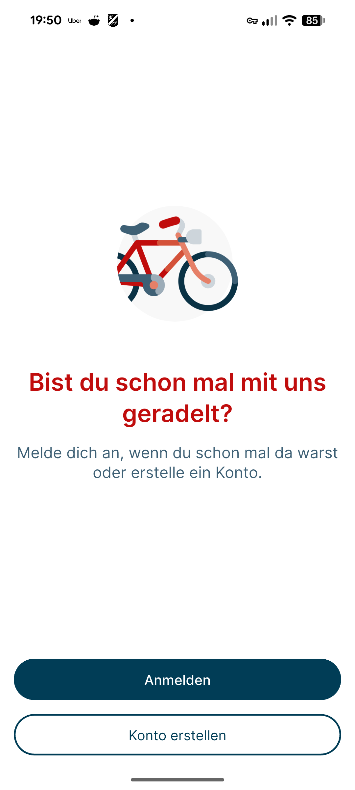
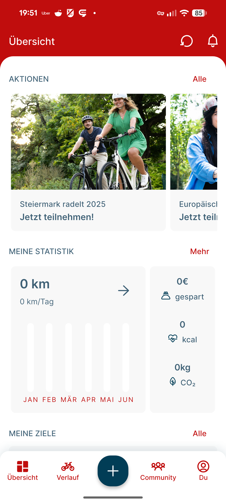
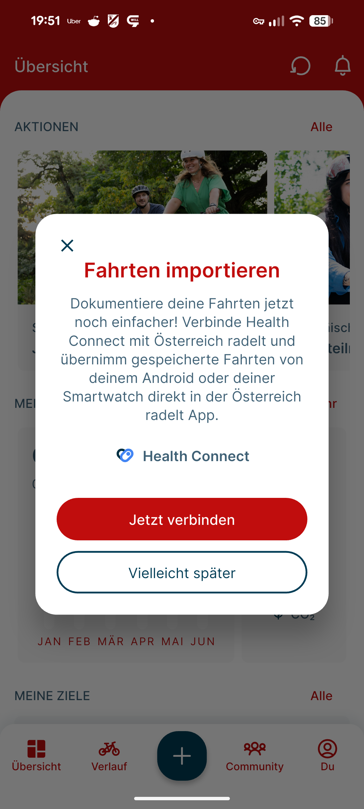
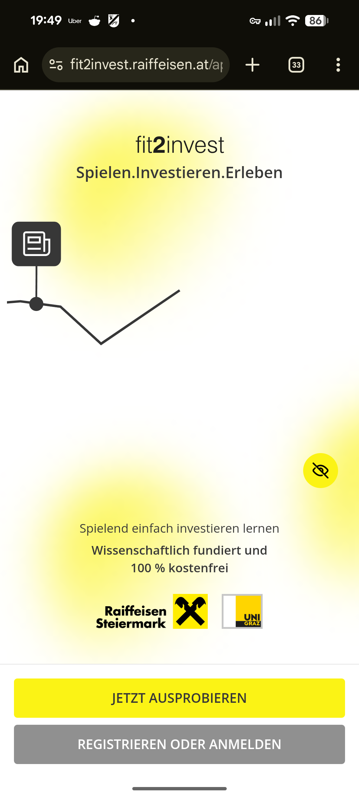
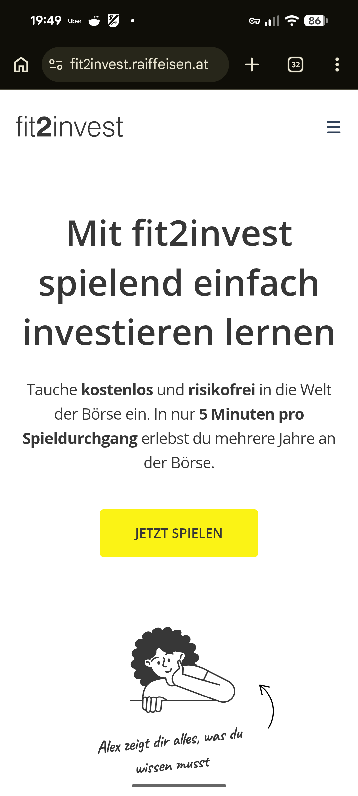
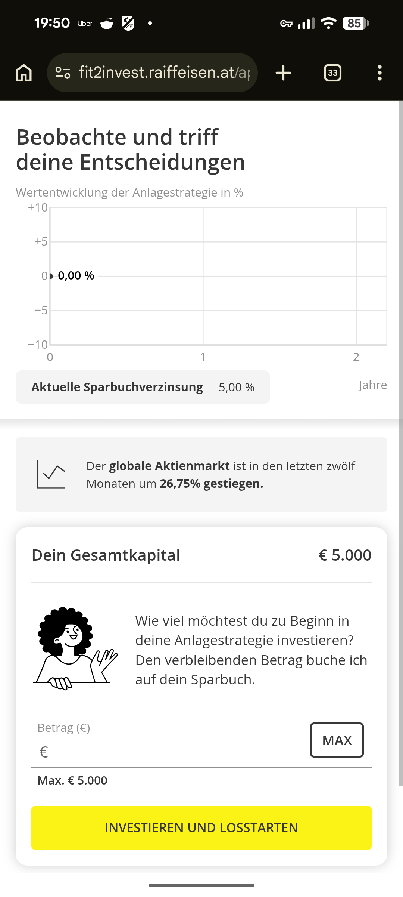
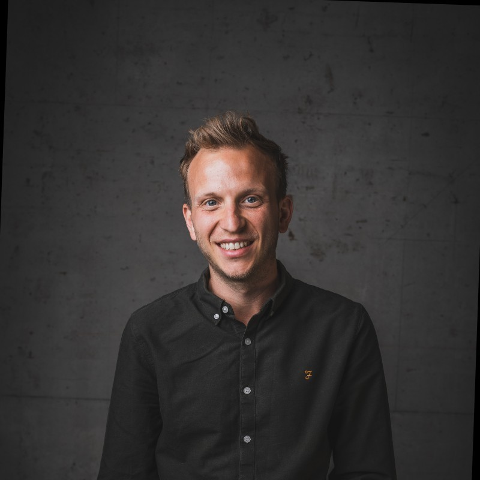

I'm Thomas Fink — Design Team Lead, Business Development Manager, and Product Owner based in Graz, Austria. For over a decade I've been building products at the intersection of user experience, agile delivery, and business growth.
Currently leading a nine-person design team through a pivotal transformation: from design agency to AI-powered analytics and financial services — redefining what design means in a data-first world.
A bridge builder between Design, Business, and AI.
Technology is accelerating because of AI. Customer needs are not. Design is the bridge between those two worlds — framing the right problems and turning technology into solutions that create real value.
Strategic conversations and meaningful collaborations.
I'm interested in talking to people who are thinking seriously about where Design fits in an AI-driven world — whether that's a leadership conversation, a new project, or just an interesting exchange of ideas.
A pixel pusher or a backlog manager.
I'm at my best when I'm framing problems, pitching ideas, and aligning teams around a direction — not when I'm deep in operational detail. If you need someone to move fast at the strategic level, that's me.
Led the full tender pipeline — from opportunity scanning to concept development, proposal writing, and submission. Led multiple complex public tenders, including cross-border bids where eligibility required sourcing subcontractors and borrowing qualifications from partners in other countries. One win required solving a last-minute ISO certification gap this way — clearing the eligibility requirement and securing the bid. Implemented an AI-based workflow across the entire tender process that significantly increased throughput — more bids, faster turnaround, without adding headcount. Where the tender process requires it, I also handle the pitch — presenting the proposal and representing the company in front of the client.
Leading a nine-person design team through two back-to-back acquisitions: Parkside Interactive was acquired by Ascent (backed by Horizon Capital), which was then acquired by Acuity — later rebranded as Acuity Analytics — backed by Permira, one of Europe's largest PE firms. I took over the team mid-transition, when the first integration had barely started — because behind the scenes, the second deal was already being shaped. Acuity Analytics operates in KPO, data & analytics, and financial services, and acquired us specifically to strengthen their tech arm across Data, AI, and Software Engineering. Keeping a team stable, utilised, and strategically positioned while the organisational context keeps shifting underneath — that is the real work.
Product Owner for the full cross-platform relaunch of the Österreich radelt app — Austria's national initiative to motivate people to use their bike for everyday routes. Built with Flutter and Material Design, shipping on both iOS and Android. One of the core challenges was coordinating requirements across all nine Austrian federal states — each with their own stakeholders, priorities, and political dynamics. Delivered on time and within budget. Key features included health integration: users can sync data from sports watches and fitness trackers directly into the app. Since the relaunch, app users more than doubled — from ~10,700 to over 23,700 — with the platform reaching a peak of 44,000+ active users nationally in 2024.
Led the full RFP process for a complex enterprise trademark management platform — from proposal to win (€ 1.2M). Kicked off the project with a four-day onsite workshop to define the MVP scope: using a user scenario-based approach, we identified three core scenarios and worked through every required step within each — a structured method that gave the team a shared, traceable foundation from day one. Now supporting the team as Project Manager: responsible for controlling, internal and external stakeholder communication, and escalation management throughout delivery. The current challenge is building the MVP within a three-month window while coordinating a dev team of ~10 FTEs — a combination that demands tight prioritisation and clear communication at every level. We're also seeing an interesting shift: as AI coding tools like Claude Code accelerate individual output, the bottlenecks are moving — away from pure implementation speed and towards integration, review quality, and architectural decision-making.
Product Owner on fit2invest — a gamified investment simulator for Raiffeisen-Landesbank Steiermark, built with the University of Graz. The platform lets users experience up to 30 years of real stock market history in minutes, risk-free and scientifically grounded. We inherited an existing UX concept that needed a complete overhaul, introduced D3.js for data visualisation as requirements evolved, and ran weekly stakeholder meetings across multiple parties — all on a fixed-price contract. I led the project through its first six months before handing it over.
Product Owner on the multi-million euro relaunch of four webshops onto a unified multi-tenant platform for one of Switzerland's largest retailers. The team structure alone reflected the scale: two backend teams running in parallel, plus a dedicated frontend team — one of the largest delivery setups I've worked in. The real complexity wasn't technical, it was process: unifying online, in-store, and hybrid fulfilment flows — buy online, pick up in store, buy in store, ship to home — across four shop brands onto a single coherent platform. On the tech side, we introduced Solr search to improve product discovery, though tuning early search result quality required significant iteration. Server-side rendering combined with Google Analytics created serious performance challenges around page load times — balancing SEO and tracking needs against frontend performance was an ongoing battle throughout the project.







I've spent the last decade at the crossroads of design, product, and business — always drawn to the moments where good ideas meet real constraints and something useful gets built. My background is in Business Informatics (MSc, FH Campus 02), which means I've always had one foot in the technical world and one in the human one.
Since 2020 I've been at Parkside Interactive — now Acuity Analytics — through two back-to-back acquisitions: first by Ascent (Horizon Capital), then by Acuity (Permira). I took over the design team mid-transition, with the second deal already in motion behind the scenes. That experience shaped a lot of how I think about leadership under uncertainty.
What genuinely excites me right now is the question of how design services stay relevant — and become more valuable — as AI reshapes the analytics and data world. That's the puzzle I'm working on every day.
Outside of work: I live in Kumberg near Graz with my wife and two sons (aged 1 and 4). When I'm not on dad duty, I'm most likely on a mountain bike — chasing trails and occasionally entering races I'm not quite prepared enough for. I also spend a fair amount of time tinkering with AI tools, building small automations, and trying to stay ahead of what's actually changing in this space rather than just reading about it.
Whether it's a strategic role, a project, or just an interesting conversation about digital products and AI — I'm always open to a good exchange.